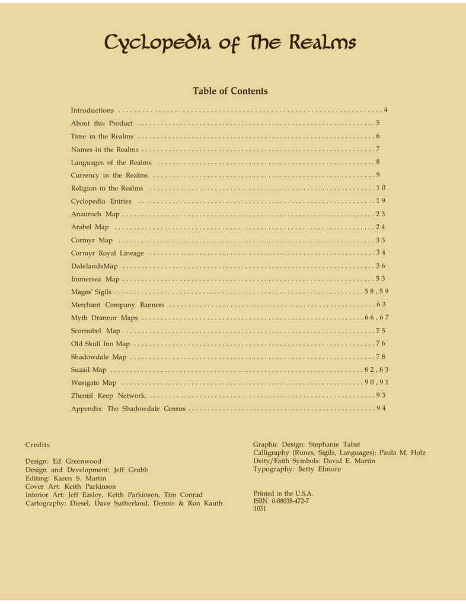

目录与制作人员 · Contents and Credits

目录 Table of Contents
| 原书项目 | 页码 |
|---|---|
| 导论 Introductions | 4 |
| 本产品说明 About this Product | 5 |
| 国度中的时间 Time in the Realms | 6 |
| 国度中的名字 Names in the Realms | 7 |
| 国度的语言 Languages of the Realms | 8 |
| 国度的货币 Currency in the Realms | 9 |
| 国度的宗教 Religion in the Realms | 10 |
| 国度百科条目 Cyclopedia Entries | 19 |
| 安纳洛克地图 Anauroch Map | 23 |
| 阿拉贝尔地图 Arabel Map | 24 |
| 科米尔地图 Cormyr Map | 33 |
| 科米尔王室世系 Cormyr Royal Lineage | 34 |
| 达勒兰地图 Dalelands Map | 36 |
| 因默海地图 Immersea Map | 53 |
| 法师印记 Mages’ Sigils | 58、59 |
| 商人公司旗帜 Merchant Company Banners | 63 |
| 神话德兰诺地图 Myth Drannor Maps | 66、67 |
| 斯科恩诺贝尔地图 Scornubel Map | 75 |
| 老骷髅客栈地图 Old Skull Inn Map | 76 |
| 暗影谷地图 Shadowdale Map | 78 |
| 苏泽尔地图 Suzail Map | 82、83 |
| 西门地图 Westgate Map | 90、91 |
| 津提尔要塞网络 Zhentil Keep Network | 93 |
| 附录：暗影谷人口普查 Appendix: The Shadowdale Census | 94 |
制作人员 Credits
| 项目 | 人员 |
|---|---|
| 设计 | Ed Greenwood |
| 设计与开发 | Jeff Grubb |
| 编辑 | Karen S. Martin |
| 封面艺术 | Keith Parkinson |
| 内部艺术 | Jeff Easley、Keith Parkinson、Tim Conrad |
| 制图 | Diesel、Dave Sutherland、Dennis 与 Ron Kauth |
| 平面设计 | Stephanie Tabat |
| 书写艺术（符文、印记、语言） | Paula M. Holz |
| 神祇／信仰符号 | David E. Martin |
| 排版 | Betty Elmore |
| 印刷 | 美国 |
| ISBN | 0-88038-472-7 |
| 产品编号 | 1031 |
目录页码沿用原书印刷页码。